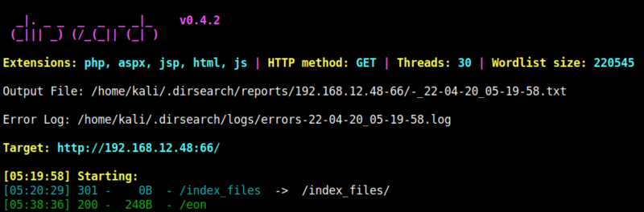
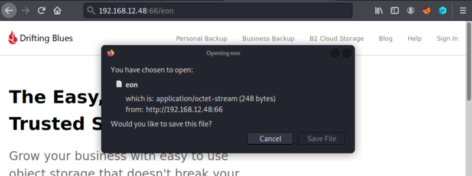

3.1 Dirsearch
As “dirb” and “gobuster” don't give any results try “dirsearch” on this last URL http://192.168.12.48:66.
1. Run the following on your Kali Linux Machine.
$dirsearch -u http://192.168.12.48:66/ -w /usr/share/wordlists/dirbuster/directory-list-2.3-medium.txt
Output:

2. Visit http://192.168.12.48:66/eon.

3. Download the file.